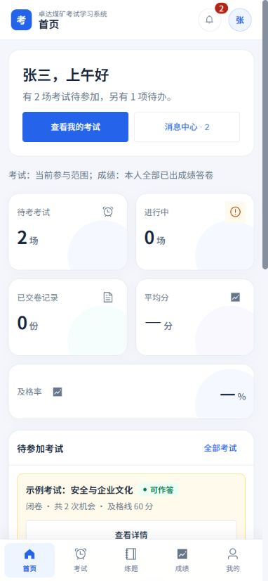
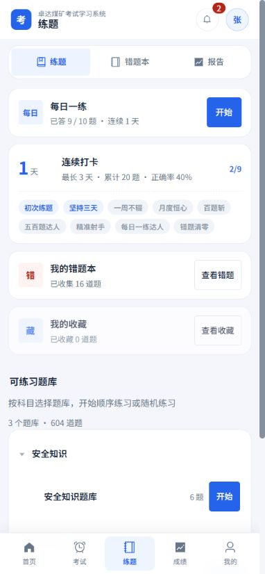
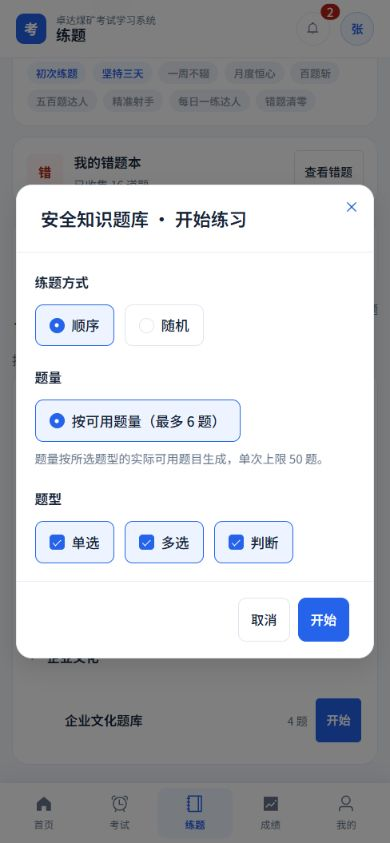
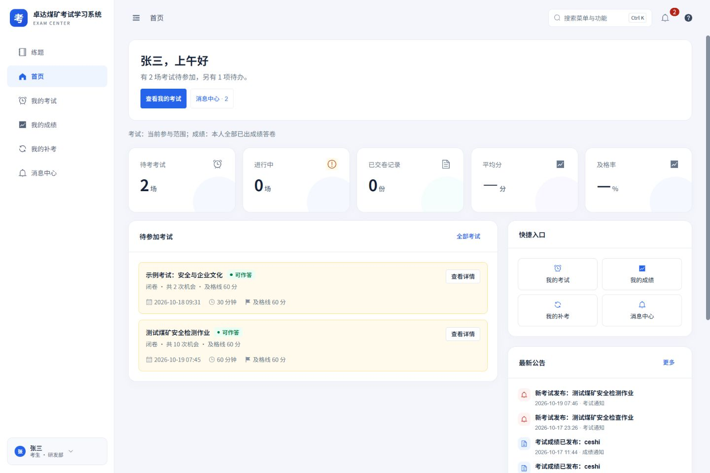
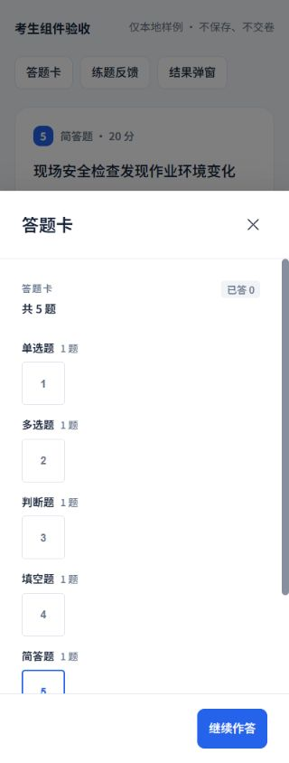
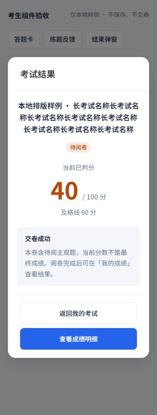

考生端与练题端 · 上一轮样式与流程记录
此记录验证样式一致性、布局和功能，不代表已按设计稿还原。侧栏与练题首页的后续结构修正见 最新设计对照与实际截图。
2026-10-19 · 延续白侧栏、浅灰蓝背景、蓝色操作和 16 px 卡片规范。实际应用源码已更新。
11 个实际页面 × 4 种宽度57 个测试文件 · 436 项测试类型检查与生产构建通过本次落地
- 考生首页、我的考试、我的成绩、我的补考、个人中心与消息中心；练题首页、错题本、收藏、学习报告与练题个人页使用同一套色彩、圆角、间距和状态规范。
- 手机考试采用单题阅读、上一题／下一题、底部常驻操作和抽屉答题卡。五种考试题型、简答富文本与图片能力、个人加时、复核、补考、免考、次数限制及账号权限保留。
- 交卷前等待最新答案保存；串行保存防止旧请求覆盖；失败保留本页答案并支持重试。填空逐空输入正确回传，空填空与空富文本不计为完成。
- 练题支持答题卡往返、遗漏题补答和首次判分小结；顺序／随机、原有三种练题题型、每日一练、错题复习、收藏重练、答案及解析开关保留。
- 手机弹窗与确认框按钮至少 44 px；简答工具触控区至少 44 × 44 px；横屏弹窗正文内部滚动，底部操作保持可达。
- 统计写明当前参与范围、本人记录、已加载数量及趋势期间；无样本正确率显示“—”，请求失败可重试。成绩趋势保留实际分数和各场及格线，不强行压成百分制。
响应式检查
分别检查 320、390、768、1440 px 宽度，44 个页面尺寸组合均无页面横向溢出。弹窗另外核对 844 × 390 横屏，内容滚动与底部按钮可达。
| 页面 | 范围 | 320／390／768／1440 |
|---|---|---|
| 考生首页 | 问候、统计、待参加考试、公告、快捷入口 | 通过 |
| 我的考试 | 筛选、考试卡片、待阅卷、免考、操作按钮 | 通过 |
| 我的成绩 | 统计范围、桌面列表、手机卡片、复核入口 | 通过 |
| 我的补考 | 申请表单、申请记录、空状态 | 通过 |
| 消息中心／个人中心 | 列表、资料、安全与密码弹窗 | 通过 |
| 练题首页 | 每日一练、学习成就、题库树、设置弹窗 | 通过 |
| 错题本／收藏 | 分组、长题干、分页、空态与加载重试 | 通过 |
| 学习报告／练题个人页 | 趋势期间、累计范围、无样本统计 | 通过 |
手机端实际页面






桌面端实际页面

作答组件与结果弹窗
下图使用实际组件及本地样例数据检查。五种题型、长题干与长选项均核对 320 px；填空往返保留答案，富文本连续字符在编辑区内换行。




验证方式与范围
列表、统计、题库、账号页和练题设置弹窗使用现有演示考生账号查看；作答组件使用独立本地样例。保存、交卷、复核与补考等写入流程使用模拟 API 测试，未通过 UI 开始或提交真实考试，也未修改账号权限。
57 个前端测试文件、436 项测试通过；Vue／TypeScript 类型检查通过，Vite 生产构建通过。已有 Sass 旧 API 弃用提示不影响构建。
截图中的数据为验收时接口返回的当前值；后续数据变化以应用为准。测试明细在工作区 .build-verify/learner-full-tests.log，类型与构建日志分别为 learner-types-final.log、learner-build.log。